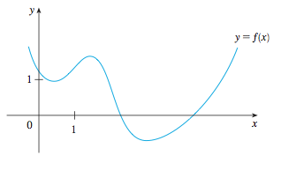

2.8 - The derivative as a function
If $f'(x)$ is defined for all $x$ on $[a,b]$, then the derivative itself is a function on this interval.
Draw the graph of $f'(x)$ using the graph of $f(x)$:

If $f(x) = x^3-x$, determine $f'(x)$ from the definition and graph both $f(x)$ and $f'(x)$.
If $f(x) = \sqrt{x}$, determine $f'(x)$ from the definition. What is the domain of $f(x)$ and $f'(x)$? (ans=use the conjugate in the def)
(optional?) If $f(x) = \frac{1-x}{2+x}$, determine $f'(x)$ from the definition.
(notation) $$f'(x) = y' = \frac{dy}{dx} = \frac{df}{dx} = \frac{d}{dx}\left[ f(x) \right]$$
$$
f'(a) = \left.\frac{dy}{dx}\right|_{x=a} = \left. \frac{d}{dx}\left[ f(x) \right] \right|_{x=a}
$$
If the derivative of $f$ exists at $x=a$, then $f$ is differentiable at $x=a$. If $f$ is differentiable at every point on an interval, $f$ is said to be differentiable on the interval.
Where is $f(x) = |x|$ differentiable?
If $f$ is differentiable at $x=a$, then $f$ is continuous at $x=a$.
Note: the converse is not true.
Examples of cases where the derivative fails to exist:
(higher order derivatives) Since the derivative itself can be a function, we can take the derivative of the derivate. This is called the second derivative of $f(x)$, denoted:
$$
f''(x) = \frac{d^2y}{dx^2} = \frac{d^2}{dx^2}f(x)
$$
In general, the $n$th derivative is written:
$$
f^{(n)}(x) = \frac{d^ny}{dx^n} = \frac{d^n}{dx^n} f(x)
$$
If $f(x) = x^3 - x$, find the second, third, and fourth derivatives.